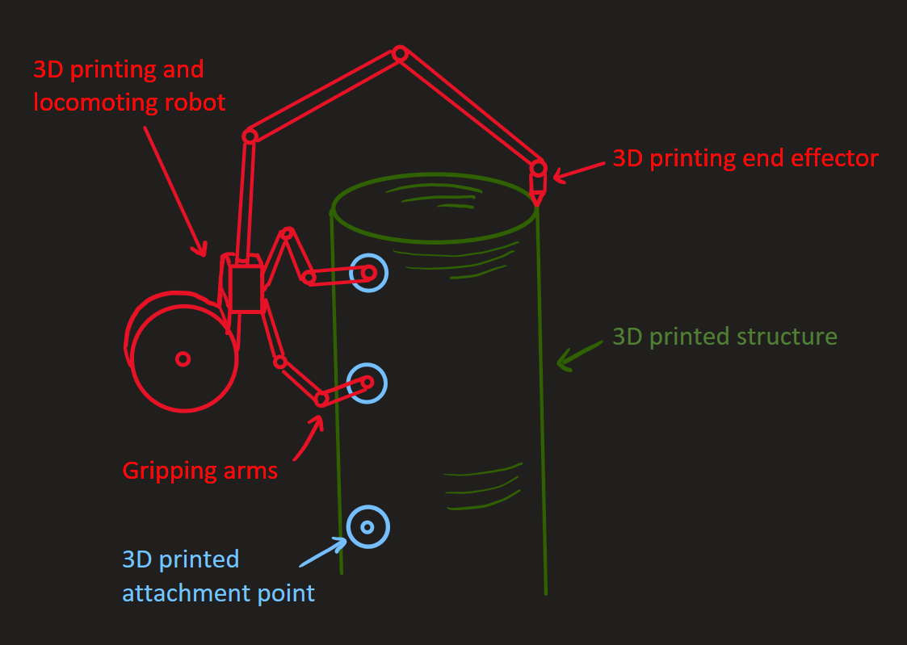
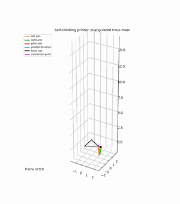
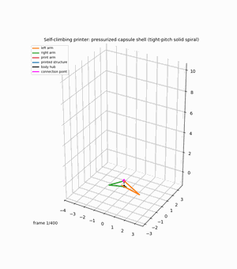

Concept · Prototype in progress
The 3D-Printing Spider Bot
A 3D printer that moves along the structure it prints. Robotic arms climb, anchor and extrude, so a small satellite could build structures far larger than itself.
The idea
The problem
Space structures are limited by the size of a rocket's payload fairing. Anything big, such as solar arrays, antennas, habitats or station trusses, must be folded and unfolded, or assembled piece by piece by astronauts or teleoperated arms.
What's needed is a manufacturing system that is autonomous, universal (any structure, any size) and still small enough to launch affordably.
The answer: print, then move
Launch a small robot that prints the structure in orbit, then walks along what it just printed. Like an inchworm, it anchors, extrudes the next segment, grips it and pulls itself forward.
Attachment points are printed into the structure itself, so the cycle repeats indefinitely. In effect the printer's build volume is infinite, and it never has to grip a structure while floating free.
How one cycle works
- Anchor. The rear gripper locks onto the last printed attachment point.
- Extrude. The print-head arm lays down the next segment of structure.
- Cure. The new segment sets enough to carry the robot's weight.
- Advance. The front gripper clamps the new segment, the rear releases, and the robot steps forward.
- Repeat. The structure grows one section at a time, in any direction the mission needs.



The Earth prototype
To test the cycle on the ground, the robot is inverted: the chassis is bolted down and the printed tube is what moves. Two arms pass the tube along, and a third arm prints the next section onto its end.
What's on the bench
- GrippersTwo SO-101 arms with a custom gripper. One servo drives both the jaw and the latch that locks onto an attachment point.
- PrinterRotrics DexArm carrying the print head and a line laser for measuring the part.
- CamerasThree mono global-shutter cameras: one on each gripper wrist and one for the laser scanner.
- The partA printed tube with attachment points 183.7 mm apart. A new point is added with every printed section.
- BrainsScripted motion for coarse moves; a learned policy for the final insertion of the gripper into an attachment point.
How AI agents were used
I did the systems design, hardware and robot model. The software, more
than 1,900 tests' worth, was written by AI coding agents running in
pi. My job was to manage them like a small team.
- MeDesign & describeSystems design, parts, CAD, and a hand-built URDF robot model so agents understand the physical cell.
- OrchestratorPlanThe main agent turns the goal into tasks with acceptance criteria in Backlog.md, grouped into milestones.
- Sub-agentsBuildNarrow tasks go to worker agents, each in its own isolated git worktree so they can't overwrite each other.
- BothProve itThe orchestrator checks evidence: tests run, logged measurements, walkthrough pages. Code reading alone doesn't count.
- OrchestratorCommitTests pass, then it commits and pushes, and updates the shared state document.
↺ When a step needs hands on the robot, the agent writes a step-by-step procedure that I accept, and a separate guide tab walks me through it.
How the agent harness is set up
Everything the agents work inside: the rules they load, the skills, prompts and extensions they can call, and the shared documents they read. Lists marked ↻ are regenerated from the repository by tools/update-site-stats.py.
Ground rules: AGENTS.md
- Read first: doc-3 (live state), then doc-1 (hardware facts), then doc-2 (change control), before any robot task.
- Backlog.md workflow: run
backlog instructions overviewat the start, read the matching guide before creating, executing or finalising a task, and change tasks only through thebacklogCLI. - 1. No moving the goalposts: never edit acceptance criteria or descriptions to match what was built; ask instead.
- 2. Evidence only: a criterion is checked only with test output, a measurement or a logged run, never code reading.
- 3. No weakening: no relaxed tolerances, limits or safety checks, and no deleted or skipped tests.
- 4. Safety invariants: one camera at a time, never both grippers open with the tube attached, the gripper only commanded by the lock state machine (never the learned policy), laser off on every exit, limits and collisions checked in the motion layer.
- 5. Dry-run first, and I supervise the first live run of any new motion.
- 6. Keep doc-3 current whenever a task finishes, a blocker clears or a decision is made.
- 7. Commit and push regularly, after the tests pass and the staged files are checked for secrets and data. Sub-agents never commit.
- 8. Session and cost discipline: see below.
Project skills: .pi/skills ↻
- clarify-before-build: Before building anything visual or physical, ask clarifying questions, restate the plan and wait for my confirmation.
- human-handoff: Only for steps that truly need my hands, identity or judgment: write a short checked procedure that I accept, then verify the result.
Prompt templates: .pi/prompts ↻
- /handoff: Wrap up a session: task notes, doc-3 update, tests, commit and push, then a one-line “resume with” for the next session.
- /task: Start a fresh session on one Backlog task: read doc-3 START HERE and that task only, restate the open criteria, wait for my go-ahead.
Extensions: .pi/extensions ↻ and pi packages
- human-handoff (project): Adds the human_request, human_queue, human_checkpoint and human_verify tools and the /human command; accepted procedures run one at a time in a separate walkthrough tab.
- pi-subagents (package): delegates narrow tasks to worker, reviewer and scout agents, each in its own git worktree, in the foreground or in the background.
- show-not-tell (package): writes readable walkthrough pages of a code change, linked to the commits and the commands behind each claim.
- mit-parley-pi-extension (package): connects pi to the MIT Parley models and shows context use and estimated cost in the footer.
Tools the agents use
- read, bash, edit, write: pi’s built-in file and shell tools.
- subagent: start a worker or reviewer on one task with a written brief and a time cap.
- human_request / human_verify: propose a procedure for me, then close it only with evidence.
- walkthrough_record / walkthrough_write: record the commands behind a claim and write the walkthrough page.
- Backlog CLI: tasks, acceptance criteria, notes and the shared docs.
- uv and pytest: the robot package and its 1,960 tests.
- git worktrees: one isolated checkout per sub-agent.
Shared memory, cost and sandboxing
- doc-1: hardware and system reference, the single source of hardware facts.
- doc-2: working agreement on requirement stability and change control.
- doc-3: live orchestrator state, with a START HERE section and the next action.
- Backlog.md: 56 tasks (30 done) with 313 acceptance criteria, 224 met.
- Session discipline: a fresh session after each finished unit of work or past about 150k tokens; state goes into doc-3 and task notes first, not into compaction.
- Sub-agent discipline: one task each, a written brief, an early deliverable and a 15–30 minute cap, in its own worktree. Ask me after two hardware probes that explain nothing.
- Sandboxing: a nono sandbox profile limiting files, devices and network is drafted and tested, and is being adopted.
- My own Claude: component selection and early planning, kept outside pi to keep its context clean.
Where the money went
Recorded model cost across 175 sessions, 9/15 to 11/23/26.
- Main sessions $493
- Sub-agents $170
- Walkthrough guide $43
Most of the cost came from long sessions that re-read a huge context on every call. Daily breakdown on the Dev Log.
What I learned
- Written acceptance criteria stopped agents from declaring victory early.
- A hand-made URDF worked far better than raw CAD, where many parts shared the same name.
- Asking before building caught wrong assumptions at the cheapest point.
- Checking the model’s rendered images, not the agent’s text description, is how I confirm what the robot will physically do.
- Hardware goose chase: several sessions went into "broken" servos that turned out to be encoder-only leader servos. Now: ask me after two failed probes.
- Open-ended sub-agents explored for 30–45 minutes and wrote nothing. Now: one narrow task, an early deliverable, a time cap.
- Long sessions are expensive. Now: save state, commit, and start fresh.
- Too many checks: safety checks that blocked intended motion slowed progress. Now: the whole path is checked once before I confirm, and odd sensor readings are logged instead of stopping the run.
- Trusting an early lucky result: a first policy that seemed to work kept me on a weak early decision. Several training rounds failed before I went back and changed it. Now: question early choices when results stop improving.
- Stuck in loops: agents and the orchestrator sometimes repeated the same steps without finishing. Now: every agent run has a time limit.
How it’s tested
Nothing new moves the real robot until it has passed four levels of checking. Most of the work is in the first level: 2,188 automated tests that run on simulated servos and the robot model, with no hardware attached.
- Every commitAutomated testsSimulated servos, cameras and DexArm, plus the real robot model and collision meshes. A failure blocks the commit.
- New programDry runThe real program end to end on simulated servos, fed with recorded camera images, before anything is powered.
- First live runI superviseI watch the first powered run of every new motion, ready to stop it, and confirm steps like a lock by eye.
- EvidenceLogged resultEvery run writes a log. An acceptance criterion is only checked with a test result, a measurement or a logged run.
2,188 automated tests in 80 files
- Safety rules
- Hardware drivers
- Geometry & motion
- Crawl logic & recovery
- Learned policy & teleop
- Printing & leveling
- Tools & logging
- Paper simulation
| Suite | Tests | How often it runs |
|---|---|---|
Robot (robot/tests) | 1,960 | Before every commit, as a required rule for the agents. About 7–12 minutes. |
Learning (robot/lerobot_env/tests) | 106 | When policy, recording or crawl code changes. Slower (about 14 minutes) because it trains tiny models. |
Paper simulation (sim/tests) | 122 | Not regularly: the code hasn’t changed since September. Re-run and passing on Nov 23. |
There is no automatic test server: the agents run the suites on my laptop. Counts are refreshed from the test files by tools/update-site-stats.py.
Safety rules
334The rules that must never break: the gripper only moves through the lock state machine, never both grippers open with the tube attached, the laser is off on every exit, one camera at a time, joint limits and collisions are checked before every move, and the emergency stop holds.
One check even reads the source code and fails if any file other than the motion layer can command a servo.
e.g. gripper_lock, motion_guard, cell_collision, estop, laser, camera_arbiter
Hardware drivers
428Talking to the hardware: the servo bus protocol, the DexArm’s G-code replies, camera frames (including damaged ones), the Windows camera bridge, and finding each USB device by its fixed name.
Run against simulated servos and recorded replies, so no hardware is needed.
e.g. servo_bus, dexarm, camera_capture, camera_bridge, discovery
Geometry & motion
263Where everything is and how it moves: tube coordinate frames, arm kinematics to under a millimetre, the approach and fold moves, and the crawl-cycle animation replayed frame by frame on the robot model.
Catches a wrong angle or sign in software before it becomes a crash on the bench.
e.g. frames, kinematics, approach, fold, cycle_replay
Crawl logic & recovery
273The order of a crawl step and what happens when it goes wrong: missed insertions, a latch that won’t hold, a moved tube, a stopped run that must resume, and the two-policy handover.
Faults are injected on purpose to check the robot ends in a safe, holding state.
e.g. supervisor, cycle, recovery, handoff, two_policy
Learned policy & teleop
263Teaching and running the policies: the leader-arm mapping, recording demonstrations, the frozen training poses, loading a trained checkpoint, and the full two-policy crawl with a stand-in policy.
Most of these run in the separate LeRobot suite with tiny trained models.
e.g. teleop_live, policy_runner, training_poses, crawl_two_policy, record_train
Printing & leveling
207Getting ready to print: sliced G-code stays inside the safe workspace, the laser line is found in the image, the part’s tilt and height are fitted, and the print frame is corrected.
Uses made-up scans with known answers, since the scanner isn’t calibrated yet.
e.g. gcode_intake, laser_line, leveling, print_frame
Tools & logging
298The helpers around the robot: every script still loads, run logs are written and summarised, and the bench tools used for homing, direction checks and servo setup behave as written.
Added after some scripts’ live options called code that didn’t exist.
e.g. script_imports, events_summarizer, telemetry, home_servos
Paper simulation
122My September recreation of a published in-space printing simulation: transforms, thruster use, the compensation method and the paper’s own reported numbers.
Separate from the robot; checks my simulation still matches the paper.
e.g. test_paper_results, test_compensation
Why it matters
Decouple size from launch
One small, reusable printer-robot could build structures orders of magnitude larger than itself, the way a spider spins a web far bigger than its body. That makes space solar power, large telescopes and orbital habitats far more feasible.